Spotify
Repenser trois moments de l'expérience Spotify
UX/UI Designer · Bootcamp Coderhouse · 2023
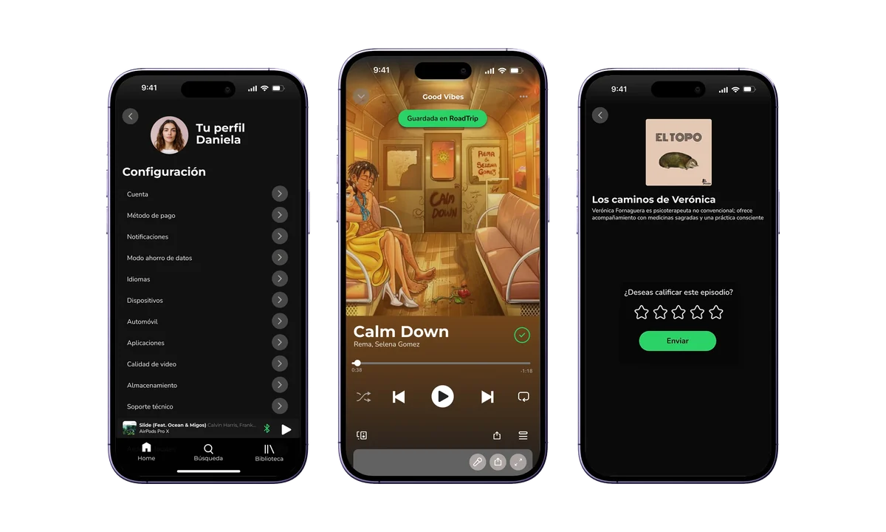
Contexte
Je redessine Spotify parce que l'expérience ne se limite pas à écouter de la musique.
Projet du bootcamp UX/UI de Coderhouse : repenser trois moments de l'application Spotify à partir de ce que vivent vraiment ses utilisateurs, de l'enquête aux écrans finaux. Le cas commence par le résultat, les trois fonctionnalités, puis raconte comment j'y suis arrivé en concevant et en testant.
Mon rôle :
- Enquête et analyse des réponses
- Persona et user journey
- Architecture de l'information
- Task flows, user flows et wireflows
- Wireframes, interface et prototype
- Tests d'utilisabilité
- Système de design et motion
- Voix, ton et guide de style
Trois fonctionnalités
Voici le résultat. Chaque fonctionnalité répond à un manque identifié auprès des utilisateurs.
Un profil simple et efficace
Un espace défini pour que les utilisateurs puissent gérer plusieurs paramètres de leur compte.
Gestion du moyen de paiement pour faciliter son changement ou sa mise à jour, depuis le même appareil.
Un processus agile
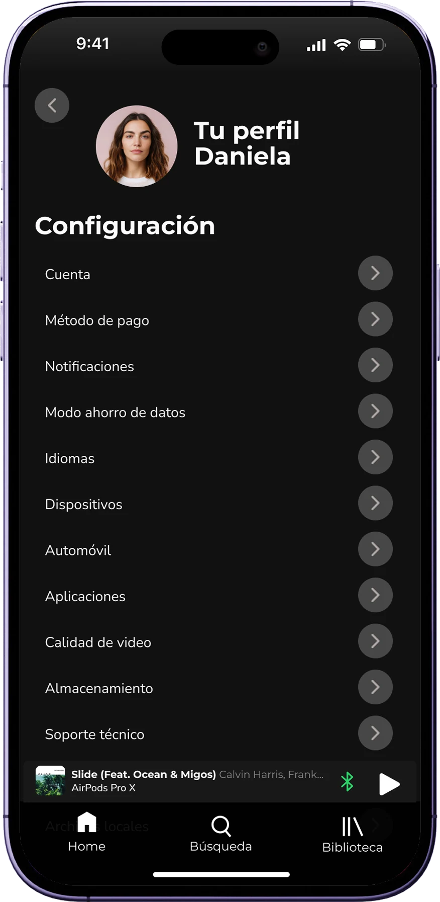
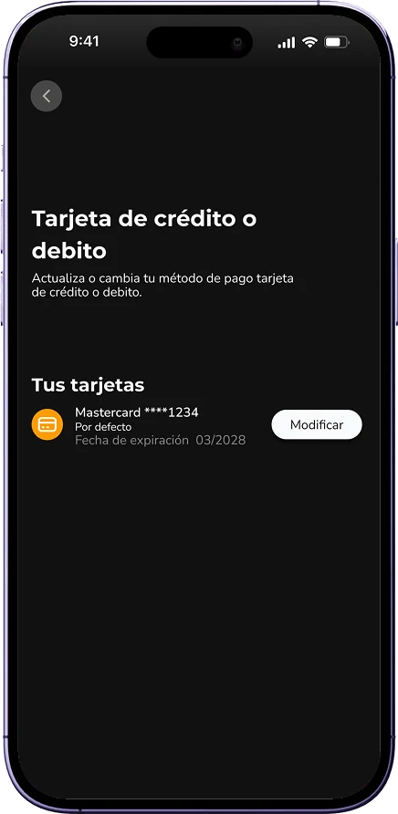
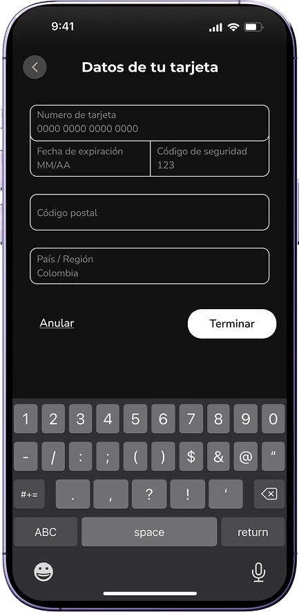
Gestion des données personnelles
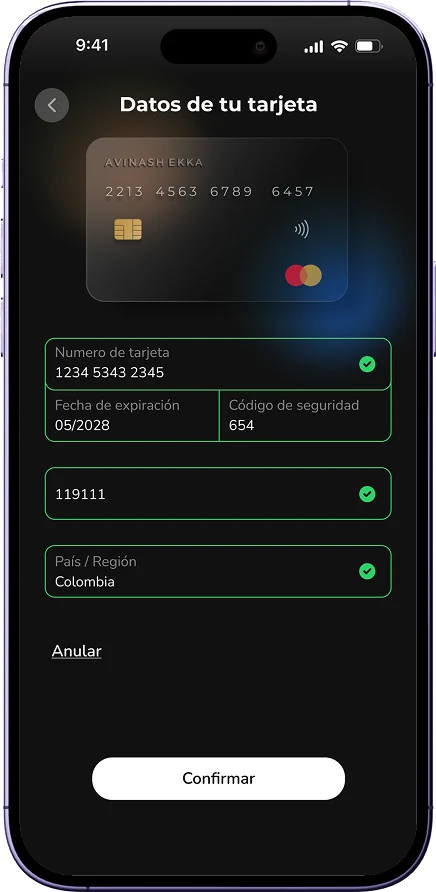
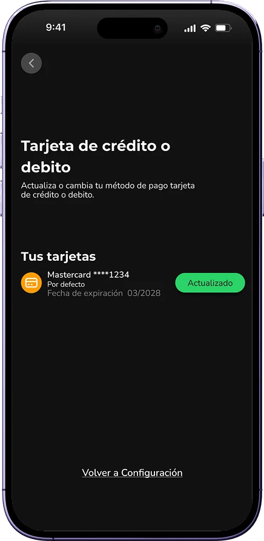
Facile et rapide
Faciliter l'enregistrement des chansons de la façon la plus simple possible, en laissant l'utilisateur choisir où il veut la ranger.
Une fois la playlist choisie, la chanson est enregistrée et l'utilisateur reçoit une confirmation sans quitter le lecteur.
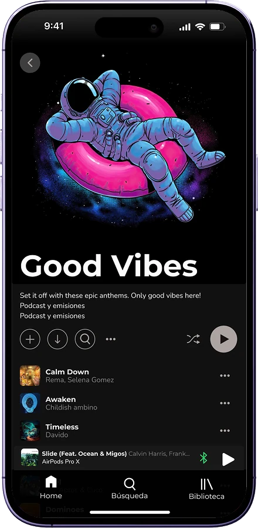
Peu d'étapes pour enregistrer de façon organisée
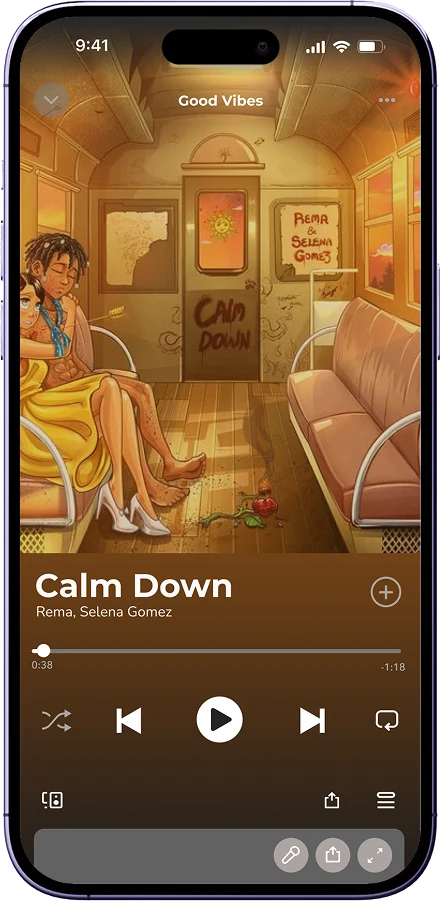
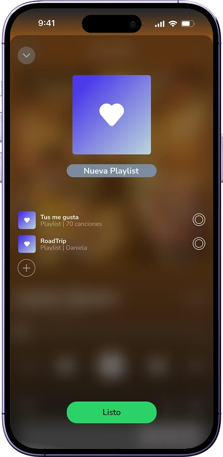
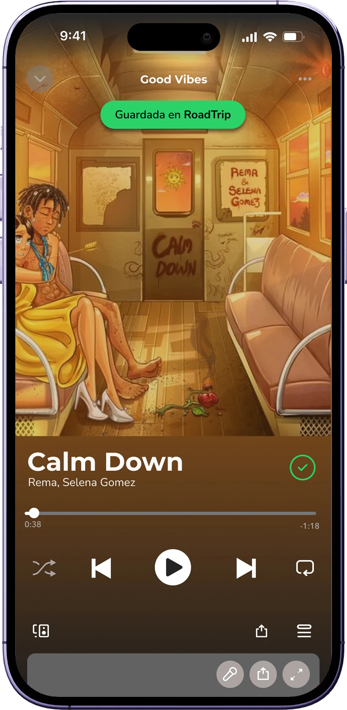
Faire partie d'une communauté
Lire les avis des autres utilisateurs sur un même contenu et pouvoir interagir avec eux.
Noter un épisode de 1 à 5, ajouter un commentaire si on le souhaite, puis voir ce que les autres auditeurs en pensent.
Évalue et partage ton avis dans une communauté
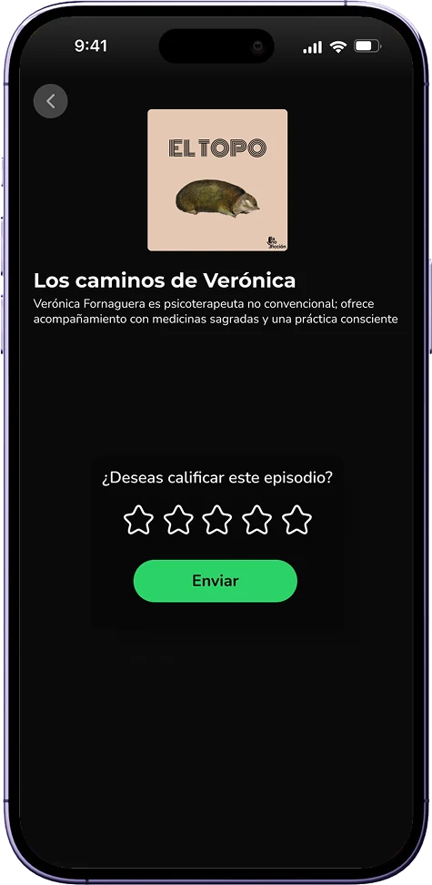
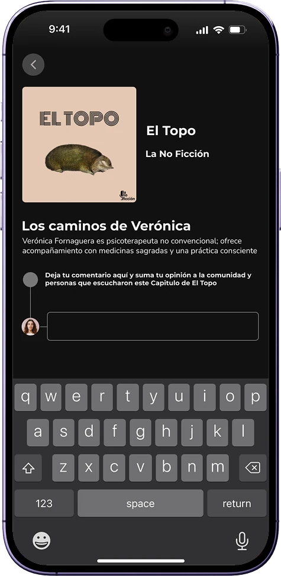
Spotify en détail
Spotify est une plateforme de musique créée en 2008, d'abord comme lecteur de streaming pour ordinateurs. Elle compte aujourd'hui une note de 4,7 sur 5 et plus de 2,9 millions de commentaires d'utilisateurs.
de note moyenne.
de commentaires d'utilisateurs.
pays où l'application iOS est disponible.
pays pour l'application Android.
Buts et valeurs partagés
- Confiance : fomenter la confiance entre les utilisateurs et l'application, en transmettant de la tranquillité face à la gestion du paiement de l'abonnement.
- Facilité : permettre à l'utilisateur de gérer plusieurs caractéristiques de son profil depuis l'application, avec de la personnalisation et plusieurs canaux d'attention disponibles à tout moment.
- Communauté : créer une communauté où le contenu est de la meilleure qualité, en encourageant l'avis des utilisateurs pour que tout le monde apporte et se sente inclus.
Principes de design
- Design pour les gens : l'aspect visuel doit transmettre clarté et accessibilité, car l'application est utilisée par des millions de personnes dans le monde.
- Design pour évoluer : chaque élément du système de design a une base conceptuelle et peut évoluer avec la marque en gardant la cohérence.
- Design pour transmettre : ce qui est nécessaire, quand c'est nécessaire. Le contenu doit être clair, simple et organisé, et guider l'utilisateur à chaque moment.
- Design pour faciliter : chaque pièce fait partie d'un système complexe et unifié, sans composants ni fonctionnalités isolés.
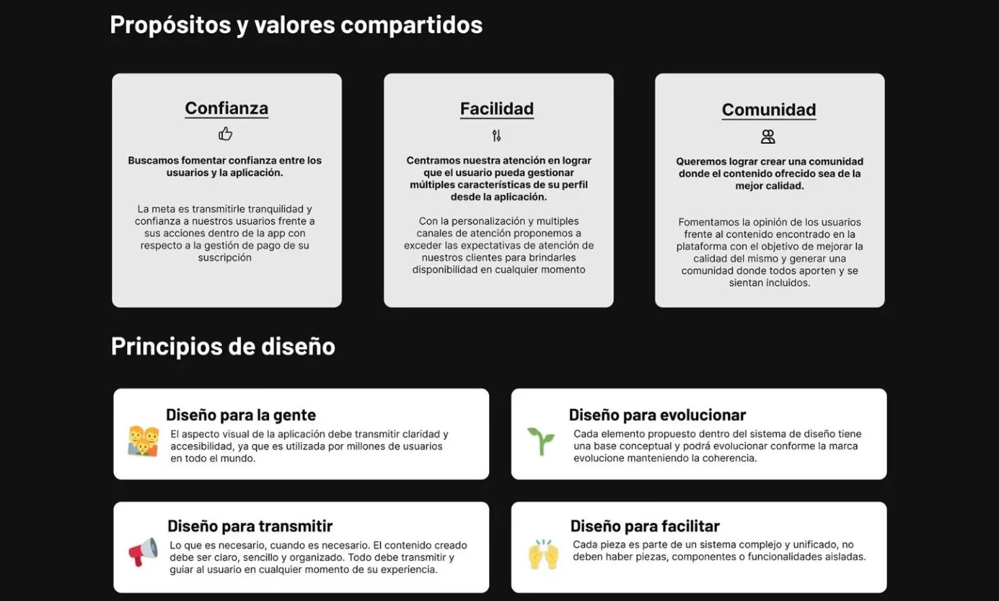
Le système de design
Avant les écrans finaux, j'ai posé les bases du produit avec la méthode de l'atomic design : des atomes, des molécules et des organismes qui gardent les mêmes qualités de design partout.
Couleurs
Une palette sur fond noir, avec le blanc et des gris froids, puis cinq familles déclinées en cinq tons : framboise, orange, vert, bleu et corail.
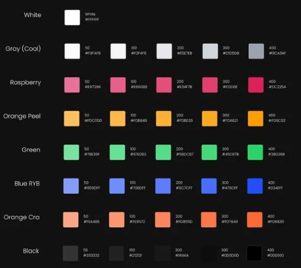
Typographie
Une échelle en em, de 0,8 à 2,441 em, hiérarchise l'information et donne de la clarté à chaque écran.
Icônes
Le style linéaire et simple est conservé, mais l'épaisseur du trait et la structure de certaines fonctions ont été repensées pour mieux distinguer les états.
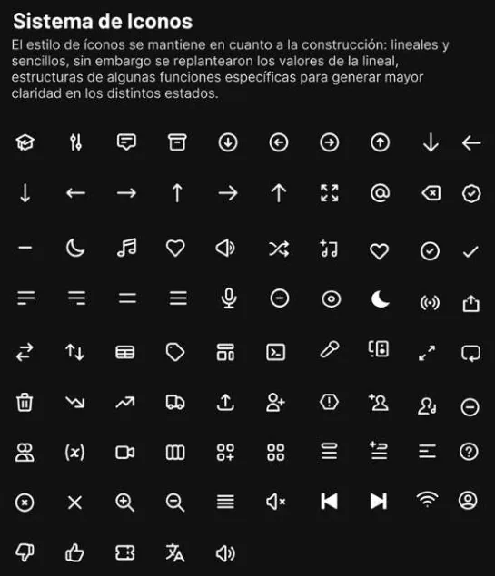
Composants
Une barre d'onglets à trois états (Accueil, Recherche, Bibliothèque), un mini lecteur, des lignes de chansons, la fiche d'épisode avec son bouton Noter, des cartes de podcast, des listes de configuration et la carte bancaire.
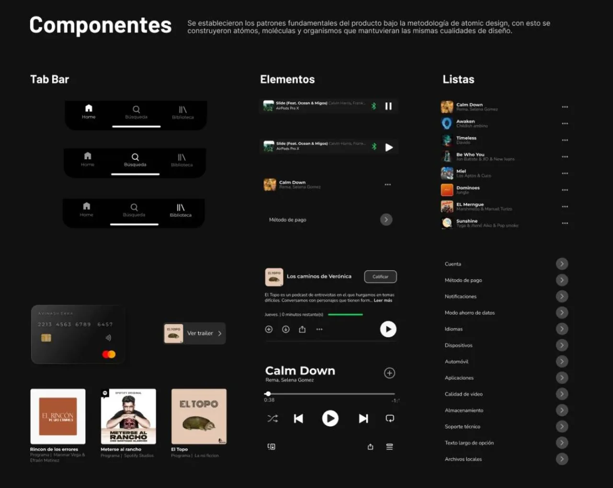
Le motion dans le prototype
Quatre interactions animées guident l'utilisateur et le rassurent :
- De l'accueil au profil : une ouverture immédiate pour y aller vite, puis, au retour, le profil se replie pour créer une hiérarchie entre les éléments.
- L'avancement : un mouvement qui transmet à l'utilisateur qu'il progresse dans le processus.
- La confirmation du paiement : une animation de chargement qui confirme les données de la carte.
- L'enregistrement d'une chanson : un mouvement qui fait comprendre que l'action sera facile et rapide.
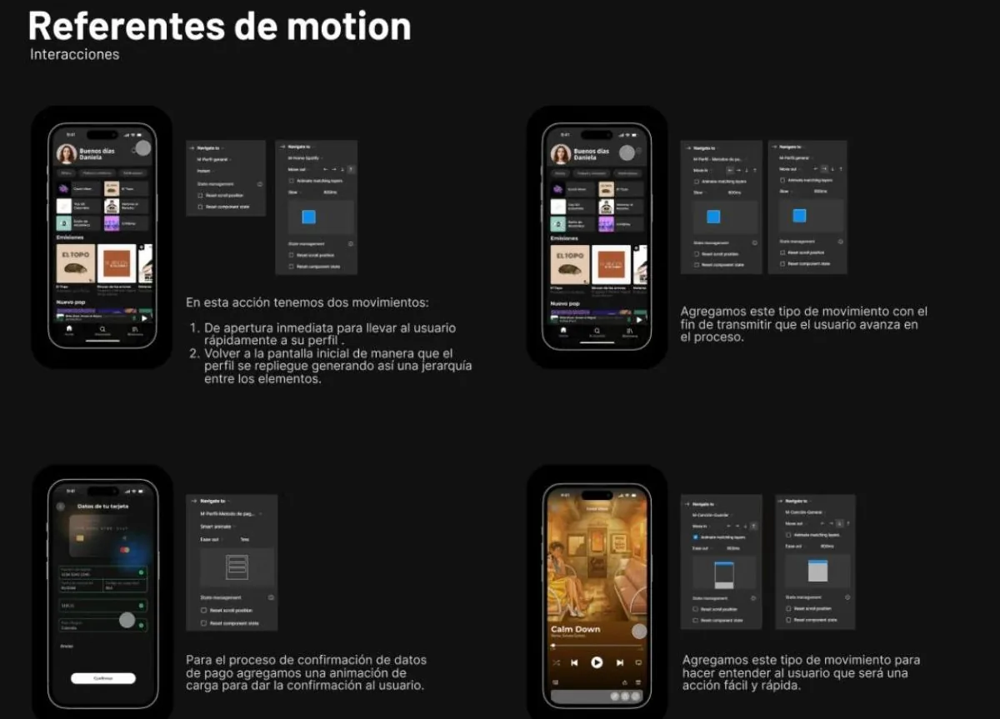
Tester avec de vrais utilisateurs
Le prototype a été testé avec 5 participants de 25 à 35 ans, tous actifs et à l'aise avec la technologie : une designer industrielle, un cinéaste, un coach sportif, un chef et une graphiste.
Trois objectifs guidaient les sessions :
- Valider, vérifier si nos hypothèses sur le comportement des utilisateurs tiennent face au prototype.
- Analyser, comprendre comment ils interagissent avec le produit et repérer les points à améliorer.
- Apprendre, mieux connaître nos utilisateurs et leur façon d'utiliser le produit repensé.
Ce que les sessions ont montré
- Noter un podcast : 5 participants sur 5 y voient une fonction qui les fait se sentir membres d'une communauté, en donnant leur avis et en lisant celui des autres pour trouver du contenu.
- Enregistrer une chanson : 5 participants sur 5 constatent que les étapes diminuent, ce qui réduit la frustration, et que l'endroit où la chanson est rangée est clair.
- À améliorer, le paiement : 3 participants sur 5 voudraient un message plus clair confirmant la mise à jour de leur moyen de paiement, pour « être sûrs ».
- À améliorer, la note : 2 participants sur 5 voudraient pouvoir simuler l'écriture dans le prototype pour vérifier le résultat.
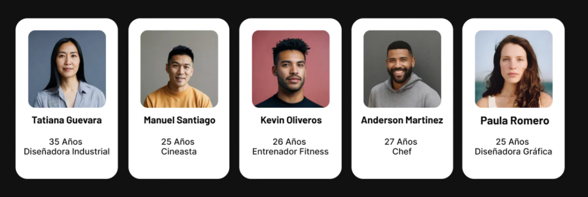
Comment j'en suis arrivé là
Tout ce qui précède est né d'un processus : concevoir, tester et ajuster. Voici comment, de la méthodologie à la voix du produit.
Hypothèse et méthode
J'ai choisi Spotify dans sa version mobile parce que sa navigation, l'information sur les contenus et la place des utilisateurs dans l'évaluation de ces contenus peuvent être simplifiées. L'hypothèse : des utilisateurs qui trouvent facilement un contenu de qualité et partagent leur point de vue contribuent à créer des communautés autour de la musique et des podcasts.
Pour la vérifier, le travail suit les cinq plans de l'expérience utilisateur :
- Stratégie, besoins des utilisateurs et objectifs business.
- Besoins, spécifications fonctionnelles et exigences de contenu.
- Structure, design d'interaction et architecture de l'information.
- Squelette, design de l'interface, de la navigation et de l'information.
- Surface, design visuel.
Pour comprendre les motivations, les attentes et les points de douleur de vrais utilisateurs, j'ai combiné quatre outils : enquêtes, entretiens, analyse d'heuristiques et lois de l'UX.
Analyser le contexte
Avant de parler aux utilisateurs, j'ai situé l'application dans son marché : une base immense, majoritairement gratuite, et un public de 25 à 34 ans bien représenté.
d'utilisateurs actifs.
d'utilisateurs actifs dans la version gratuite.
d'utilisateurs actifs dans la version payante.
des utilisateurs ont entre 25 et 34 ans.
répartition en % hommes / femmes de la base d'utilisateurs.
de chansons mises en ligne chaque mois.
À cela s'ajoutent 11 millions d'artistes et de créateurs qui alimentent le catalogue.
Ce que disent les auditeurs
Tout commence par une enquête auprès de 11 utilisateurs de 25 à 31 ans. L'application leur plaît, mais trois manques reviennent sans cesse.
- Donner son avis, la plupart aimeraient noter et commenter ce qu'ils viennent d'écouter.
- Trouver de l'aide, beaucoup ont eu du mal à trouver une information technique dans l'application.
- Ranger ce qu'on aime, enregistrer et classer son contenu demande trop d'étapes.
- 100 % utilisent la version payante : chaque friction touche des abonnés.
Deux enquêtes qualitatives de 11 personnes chacune et 5 entretiens ont permis d'aller plus loin. Parmi les personnes interrogées, 11 ont entre 25 et 31 ans et 5 entre 18 et 24 ans.
des personnes interrogées aimeraient laisser un commentaire sur le contenu qu'elles consomment.
ont eu du mal à trouver un support technique.
ont déjà eu du mal à retrouver une chanson enregistrée.
sont satisfaites des fonctions de l'application.
personnes utilisent surtout Spotify dans les transports.
des personnes enquêtées et interrogées ont la version payante.
Dans leurs mots :
- « Quand j'ai eu un problème avec mon moyen de paiement, j'ai dû aller sur un site web qui ne m'inspirait pas confiance. »
- « Je ne sais pas où sont rangées mes affaires. »
- « Je n'ai jamais trouvé de section d'aide dans l'application, j'ai dû regarder une vidéo sur YouTube. »
- « J'enregistre des chansons et des podcasts, mais les retrouver ensuite est un problème. »
- « Je ne peux pas voir ce que les gens commentent sur un nouveau podcast. »
Le problème n'est pas l'application, c'est ce qui manque autour de l'écoute.
Rencontrer Daniela
Pour donner un visage à ces réponses, j'ai créé Daniela Salazar, 28 ans, ingénieure environnementale et étudiante en master. Sa carte enregistrée pose problème, son abonnement mensuel est suspendu, et elle veut le réactiver avant de prendre l'avion pour écouter sa musique pendant le vol.
Son user journey montre où l'expérience se casse : aucune aide dans l'application, une recherche sur le web, un changement d'appareil, un tutoriel à suivre pas à pas, puis une nouvelle connexion. Son humeur chute à chaque étape.
- Ses buts : trouver vite les chansons et podcasts qu'elle veut écouter, voir l'avis des autres pour choisir, et résoudre un problème sans chercher de l'aide ailleurs.
- Ce qui la motive : la musique l'accompagne dans tous ses moments, elle aime apprendre et partager ses trouvailles avec ses amis, dont elle est la DJ.
- Ses frustrations : ne pas voir ce que les autres pensent d'un contenu, ne pas trouver d'aide quand l'application pose problème, ne plus savoir où sont rangées ses chansons.
Chaque fois que Daniela quitte Spotify, l'expérience se dégrade.
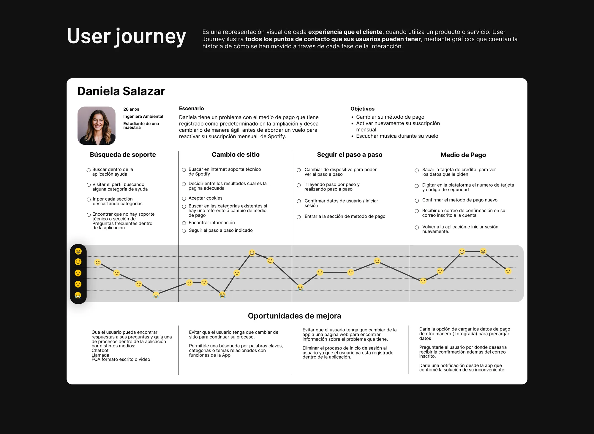
Les pistes d'amélioration du parcours
- Chercher de l'aide : trouver des réponses et être guidé dans l'application, par chatbot, appel ou FAQ écrite ou en vidéo.
- Changer de site : éviter de quitter l'application et permettre une recherche par mots clés, catégories ou thèmes liés aux fonctions.
- Suivre le pas à pas : ne pas changer d'appareil et supprimer la nouvelle connexion, puisque l'utilisateur est déjà identifié.
- Moyen de paiement : proposer de charger les données de la carte autrement (par photo), demander où recevoir la confirmation et notifier depuis l'application que le problème est réglé.
Lean UX canvas
Pour poser le problème, chercher des solutions et préparer les expériences qui testent mes suppositions, j'ai rempli un Lean UX canvas.
- Problème : modifier le moyen de paiement oblige à passer par une page externe, on ne peut pas commenter les artistes et les podcasts, et on ne sait pas où sont rangées les chansons enregistrées.
- Personas : des auditeurs de 18 à 35 ans sur mobile, des entrepreneurs qui ambiancent leurs espaces avec de la musique, et des personnes de 40 à 60 ans qui veulent s'informer simplement.
- Hypothèses : le support technique doit être intégré, l'utilisateur doit voir clairement où est son contenu, il lui faut un espace pour partager son avis et un accès simple à ce qui correspond à ses goûts.
- Solutions : une section de paiement dans l'application, des commentaires visibles sur les albums, podcasts et épisodes, une note de 1 à 5, l'enregistrement dans un endroit précis avec rappel, et des mini bandes-annonces.
- Résultats visés pour le business : passer la note de l'application de 4,8 à 5,0 en 6 mois, augmenter la rétention de 10 % en 3 mois et gagner 5 % d'abonnements en plus chaque mois pendant 6 mois.
- Bénéfices pour l'utilisateur : de la clarté sur le paiement, la certitude de savoir où sont ses affaires, du temps gagné et des problèmes réglés plus simplement.
- À apprendre en priorité : si l'application prête à confusion, si l'utilisateur se frustre faute de trouver une solution, et s'il veut vraiment donner son avis. Prochaine étape : interroger, prototyper, tester.
Trois moments, trois tâches
L'enquête et le parcours de Daniela ont donné trois tâches à concevoir, chacune liée à un manque identifié :
- Changer son moyen de paiement sans quitter l'application.
- Noter et commenter un podcast qu'elle vient d'écouter, et lire l'avis des autres.
- Enregistrer une chanson dans la playlist de son choix, en quelques gestes.
Remettre de l'ordre
Avant de dessiner, j'ai revu l'architecture de l'information. Le profil regroupe désormais toute la configuration, du moyen de paiement au support technique, et la bibliothèque rassemble playlists, podcasts, albums et contenu téléchargé. L'objectif : que chaque réponse se trouve là où l'utilisateur la cherche.
Pour l'éprouver, j'ai fait un card sorting avec une carte absente de l'architecture actuelle : SUPPORT TECHNIQUE. Les participants l'ont rangée avec Configuration, Modifier, Sécurité et confidentialité, Qualité audio et vidéo et Questions fréquentes.
Les participants ont organisé les cartes autour de trois catégories :
- Profil : personnalisation, déconnexion, support technique, sécurité et confidentialité.
- Recherche : trouver des amis, découvertes, catégories de musique et de podcasts.
- Ma bibliothèque : musique et podcasts téléchargés, favoris.
Deux conclusions en sortent. D'abord, l'architecture peut être réorganisée : Spotify propose beaucoup de catégories bien reliées pour chercher du contenu, mais les sujets de gestion du produit et du profil restent déconnectés entre eux, ce qui rend l'objectif difficile à atteindre.
Ensuite, ajouter le support technique et l'aide dans la version mobile est viable : les utilisateurs le rangent avec les thèmes techniques et de gestion, comme dans les réseaux sociaux ou les services bancaires. Suivre cette structure mentale déjà installée facilite la découverte de la fonction.
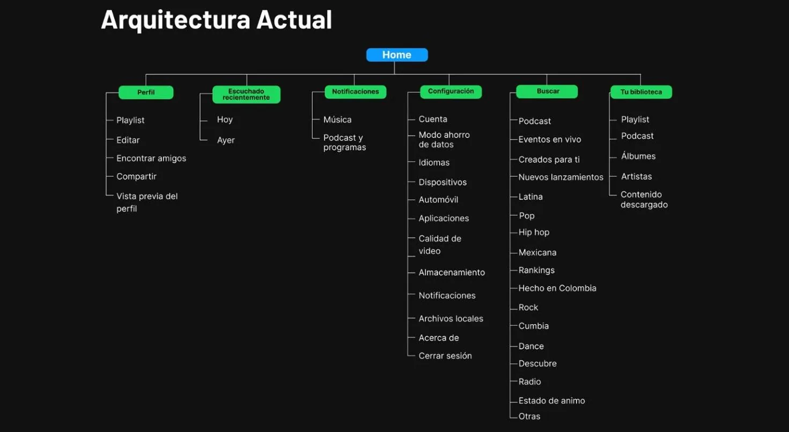
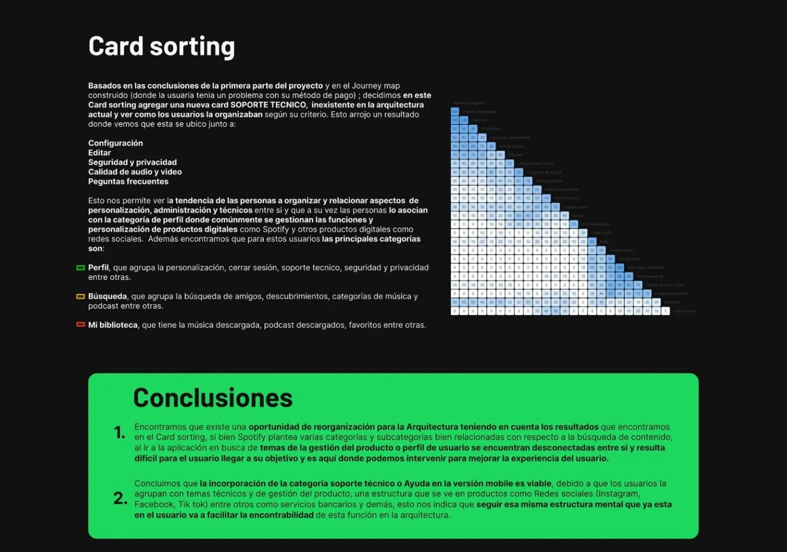
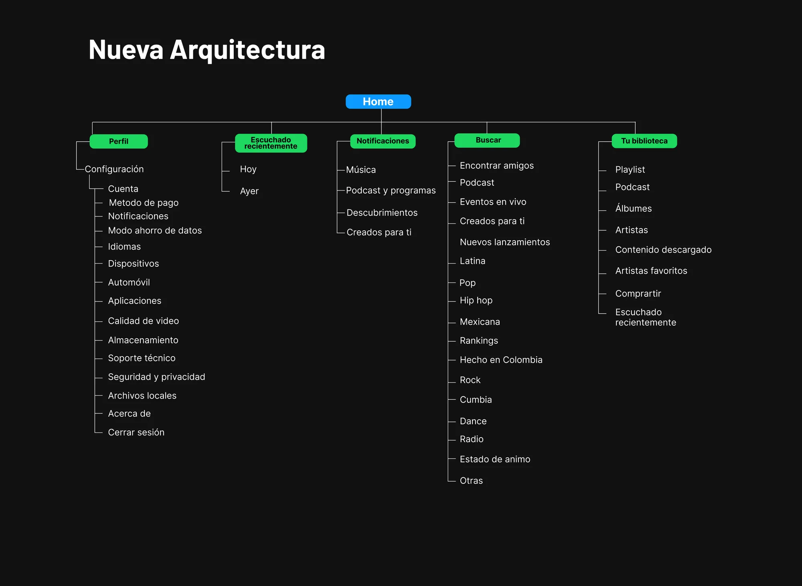
Prioriser les idées
Les idées ont été classées dans une matrice de priorisation avec MFVD, selon la désirabilité pour les utilisateurs et la faisabilité de mise en œuvre. Quatre niveaux de priorité en sont sortis :
- Priorité 1 : montrer où est rangée une chanson et choisir la liste d'enregistrement, proposer d'enregistrer un podcast avec un simple like, supprimer les filtres un par un, chercher une chanson dans un album, ranger les artistes par genre.
- Priorité 2 : filtrer les podcasts par épisodes écoutés récemment ou non terminés, enregistrer un épisode dans une liste favorite, afficher des anecdotes sur l'artiste et l'album, présélectionner les chansons favorites.
- Priorité 3 : créer automatiquement des listes de chansons liées par genre, organiser les albums par genre musical, créer un dossier spécifique pour les podcasts.
- Priorité 4 : associer une liste à un genre, chercher un album ou une chanson d'un artiste enregistré, listes créées avec l'aide de l'IA, partager des listes sans quitter la plateforme.
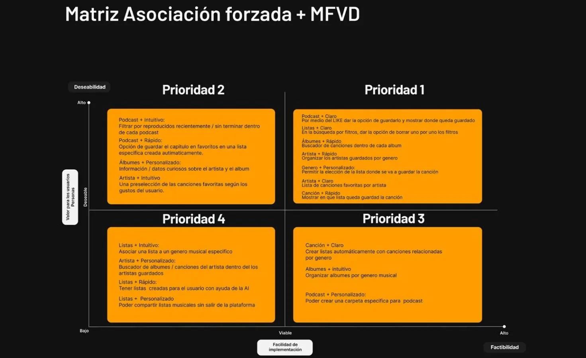
Du flux à l'écran
Chaque tâche a suivi le même chemin, du plus abstrait au plus concret :
- Task flow, les étapes idéales : Daniela finit un épisode, choisit une note et publie son avis.
- User flow, les décisions et les chemins possibles : ajouter un commentaire ou envoyer seulement la note.
- Wireflow, ces mêmes décisions posées sur des écrans basse fidélité.
- Wireframes, les écrans clés de chaque tâche, comme le formulaire de carte, avant de passer à l'interface.
Les trois tâches sont passées par ces étapes. Tâche A : enregistrer une chanson dans une nouvelle playlist. Tâche B : noter un podcast qu'elle vient d'écouter, avec ou sans commentaire. Tâche C : mettre à jour son moyen de paiement, par PayPal ou par carte, en modifiant ou en supprimant.
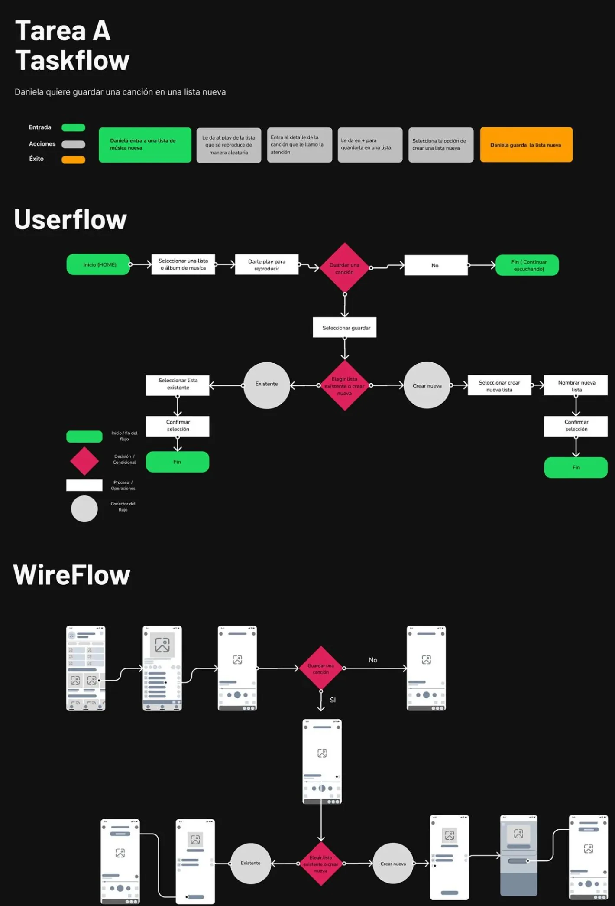
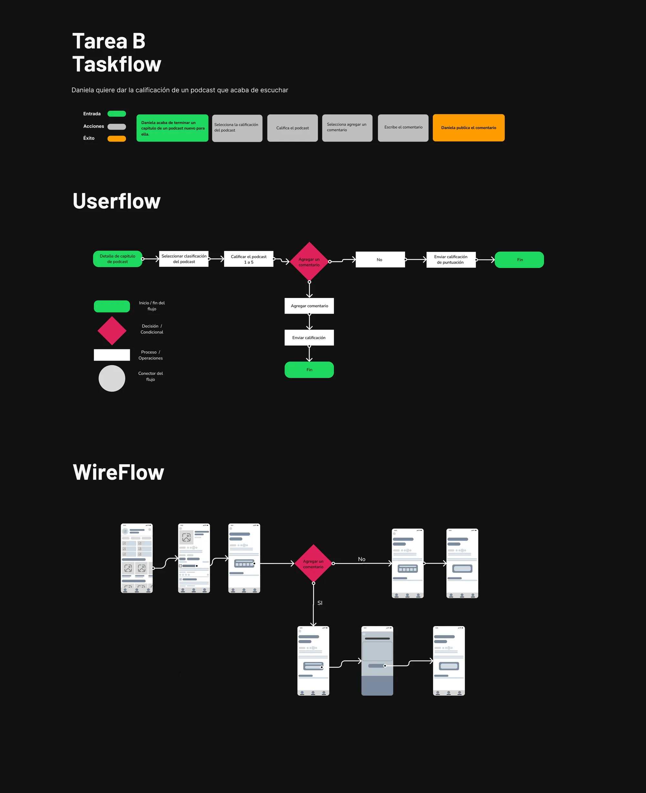
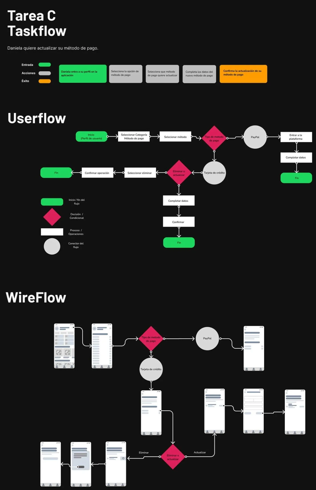
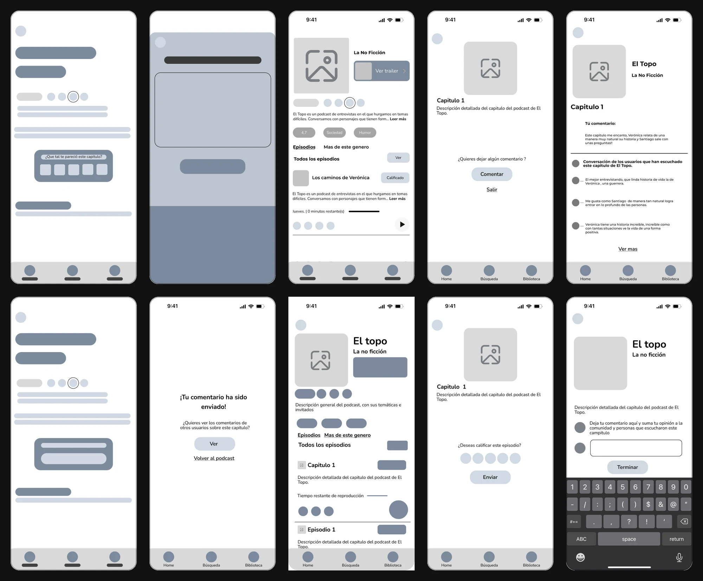
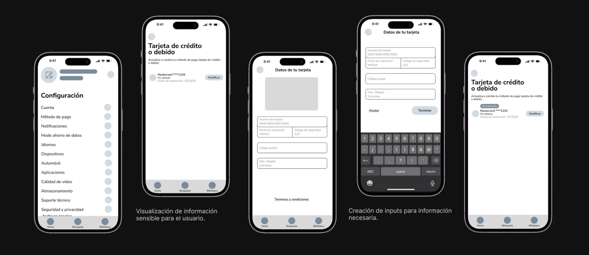
Voix, ton et guide de style
Pour décider comment le produit parle aux utilisateurs, je suis parti du cercle d'or, qui répond à trois questions :
- Pourquoi : permettre aux gens de relier leurs émotions à la musique qu'ils aiment, aux artistes et aux personnes importantes de leur vie, à tout moment et en tout lieu.
- Comment : en offrant une grande variété de contenus, listes, albums et podcasts, dans un produit numérique qu'on emporte partout.
- Quoi : une plateforme de streaming où trouver du contenu aligné sur ses goûts, avec listes, téléchargements, sessions musicales en groupe, nouveaux artistes et dernières sorties.
De là est née la matrice de voix, qui définit la personnalité de la marque autour de quatre valeurs : qualité, efficacité, proximité et clarté. Pour chacune, elle fixe la verbosité, le vocabulaire, la ponctuation et les majuscules, par exemple 70 % de majuscules en début de mot ou pour les artistes et 30 % pour mettre en valeur un contenu descriptif.
Le ton est la conséquence de la voix. Une matrice de ton le fait varier selon l'étape du parcours, de l'accueil à la confirmation d'un enregistrement, sans perdre sa cohérence.
Le guide de style réunit les règles de rédaction, avec de bonnes et de mauvaises pratiques :
- Dates : jour, mois et année en chiffres, avec 4 chiffres pour l'année, ou le mois écrit en toutes lettres.
- Message de succès : clair et aimable, il confirme que le processus est terminé. Exemple : « Tes données ont bien été enregistrées ! ».
- Message d'erreur : clair et précis, il dit ce qui s'est passé et ce qu'on peut faire. Exemple : « Nous n'avons pas pu mettre à jour tes données de paiement, vérifie-les et réessaie. ».
- Champs de saisie : des exemples concrets du format attendu, comme ejemplo@gmail.com ou un numéro de carte en groupes de quatre chiffres.
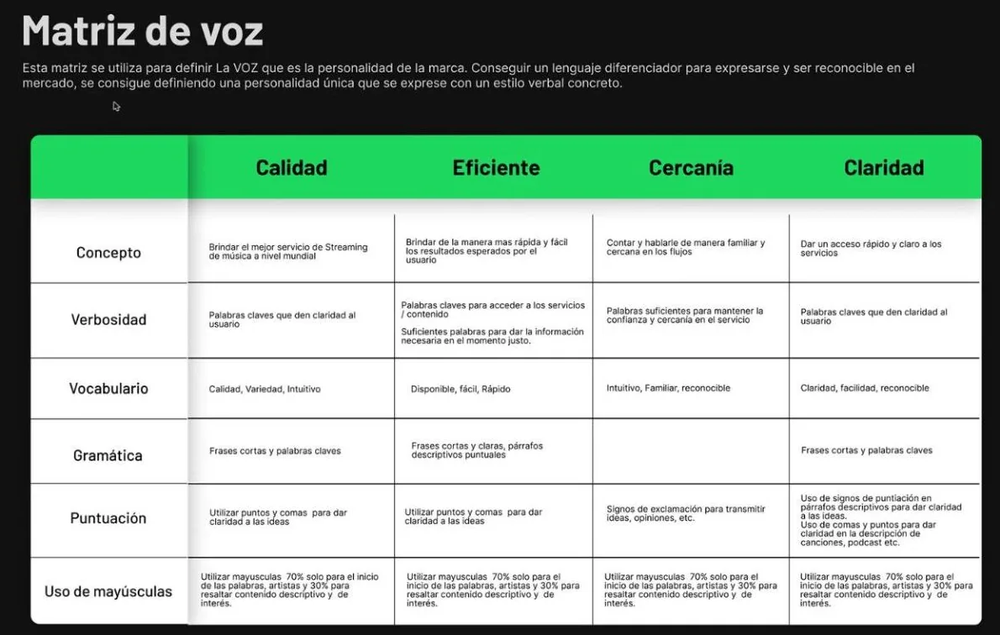
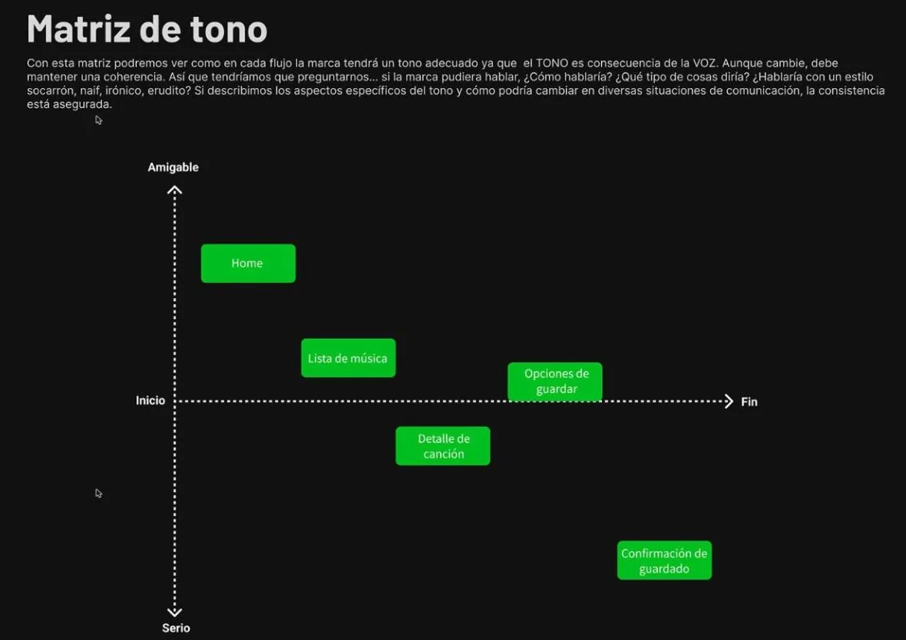
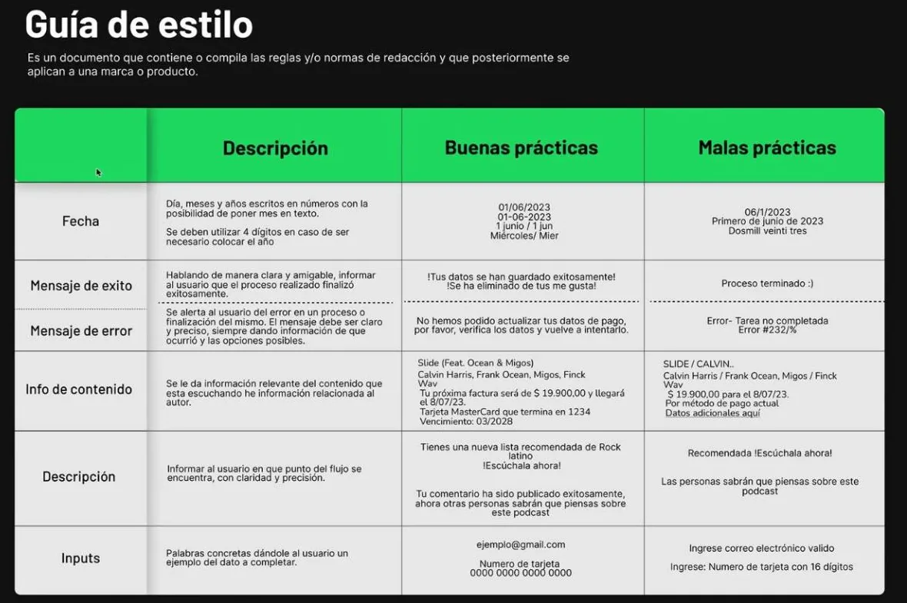
Ce que j'en retiens
- Le parcours se joue aussi hors de l'écran. Les pires moments de Daniela arrivaient quand elle devait quitter l'application : la réponse a été de tout ramener à l'intérieur.
- Une histoire relie les fonctionnalités. Raconter le projet à travers une seule personne a donné un fil commun à trois besoins différents.
- Prochaine étape : mesurer le taux de réussite et le temps par tâche lors d'une nouvelle série de tests.